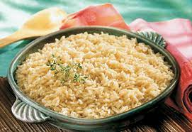

Bone Broth Rice

Description
Rice is convenient and budget friendly food. It is a great source of carbohydrates for athletes because it is easily digestible. Even if you aren't an athlete, rice makes an excellent side dish. Substituting bone broth for water adds a next level flavor profile.
Ingredients
- White rice of choice (Jasmine rice is excellent
- Bone broth of choice (beef, chicken, regular or low sodium)
Steps
- Rinse the rice is possible, but not necessary
- Place the rice into a rice cooker
- Add 2 parts bone broth for every 1 part rice
- Start the rice cooker
- Enjoy!
Back To All Recipes